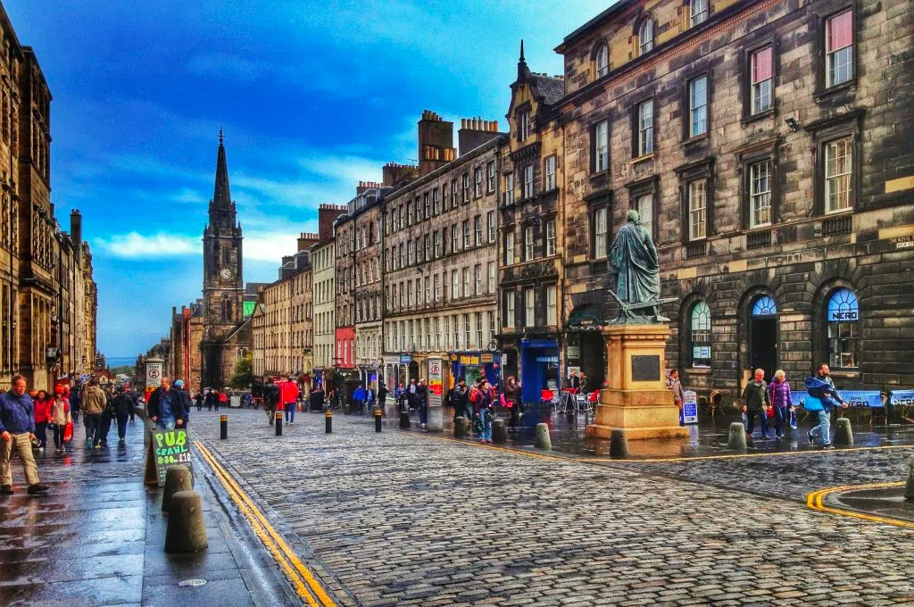
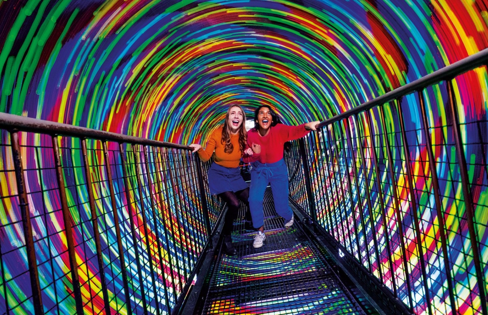

This June my friend and I finally finished college and decided that a trip would be a nice treat after hard studying this semester. The last couple of years I`ve had some small jobs here and there. Becuase of this I had enough money to travel to a country I wanted to visit. After some searching on the internet, me and my friend finally decided that the country we were going to visit, was Scotland. We also had to decide the city we would be going to and quickly found out that the capital city, Edinburgh would be the perfect choice. I already knew that this was going to be the best trip ever. I this blog I will tell you about some of the highlights from this trip and what I recommend you to visit if you are going to Edinburgh.
When we arrived at the airport in Edinburgh, we already knew a lot of facts about the city. Through our search on the internet, we had found out that Edinburgh is the second largest city in Scotland, after Glasgow. It`s population is estimated to be a little more than 500 000 inhabitants. The city lies on the shores of the Firth of Forth and is historically part of the county Midlothian and situated in the region Lothian. In 2022 it was rated the best city in the world by Time out magazine. It is the second most visited city in the UK with 4,9 million yearly visitors. It has been on Unesco's world heritage site since 1995. After my trip to the city, I certainly understand why!
Edinburgh Castle is a very beautiful and interesting historic sight that I really recommend you to visit. It is situated in the middle of the city center of Edinburgh. Here you can, among other things, see the Royal Palace and King James`s inauguration of kings and look at the oldest Crown jewels in Britain. Every day since 1861 a firegun is set off at one o'clock at the castle. That is worth watching, but I personally thought that the crown jewels were the coolest part of visiting the castle.

The Royal Mile is the main Street through the old town of Edinburgh connecting Edinburgh Castle at the top with the Palace of Holyroodhouse at the other end. The streets length is about one Scottish mile. It is the most visited street for tourists in Edinburgh. At the end of the Royal Mile you find the King's official residence in Edinburgh. Here Mary Queen of Scots once lived, and today it is used by the royal family when they officially are representing in Scotland. When we were there the flag was up, which meant that a member of the royal familiy was actually there, although we never got to see them.
Close to the Palace of Holyroodhouse, located in Holyrood Park, you will find Arthurs Seat. Today it is a grass covered hill originally the remains of a volcano that erupted 350 million years ago. It offers a nice walk, and at its highest point it offers a wonderful view over the city. It is well worth taking the hike. It was raining on the day we were there, but that only made it more authentic since the climate in Edinburgh is much the same as on the Norwegian west coast. They are used to rain, just like we are home in Bergen.
Calton Hill is a hillside in the city of Edinburgh with beautiful views of the city, and famous for its many historic monuments, including the National monument, and Nelson's monument. Many festivals take place here, and the locals also enjoy bakeries, cafes and small shops you will find in this area. We decided to visit this area at night time on a sunny day so that we would get the sunset and see all the buildings of the city being lit up after dark.
Princes Street is the main shopping street in Edinburgh. With the beautiful park Princess Street Gardens on the other side, and overlooking Edinburgh Castle. King George III got it built around 1770 and it got its name after his two sons Prince Frederick and Prince George. It used to be a street for rich people, but today you will find mainstream shopping alongside restaurants and tourist shops here. Many of the original buildings are still there, but often disguised in big shopping fronts. At Christmas it sparkles with markets and funfairs. I got myself some nice new sneakers from a Footlocker in Princess Street. You can do great bargains here.
Princess Street Gardens is a beautiful urban garden and park set in the heart of Edinburgh, separating the new town from the old town. It is used for recreation and is decorated with lovely flowers all year, and at Christmas it is transformed into a "Winter Wonderland" which sparkles with markets, funfairs, an ice rink and a ferris wheel often called Edinburgh Eye. We were there in the summertime, but we enjoyed a cup of coffee and scones from Starbucks which we brought from Princess Street when we visited the park.
Edinburgh Zoo is situated in the outskirts of the city center in Corstorphine. It is the first zoo in the world to have penguins, and is the only zoo in Great Britain where you can see Queensland Koalas and Giant Panda. It was established in 1913, and has more than 600 000 visitors every year. If you want more information about us visiting the zoo, I recommend you listen to my podcast about our visit.

Camera Obscura has won the title of being the best visitor attraction in Edinburgh in 2022/23 by VistiScotland.com. I must say I agree. We had a really good time here. Camera Obscura was created in 1835 and has five floors with more than 100 illusions, including hands on interactive illusions, optical illusions, tricks and other fun activities. In addition to this it offers a spectacular 365 degree view of the city from its rooftop terrace.
Royal Yacht Britannia has become one of the most famous boats in the world. The royal family has taken nearly 1000 voyages on this yacht, stopping at over 600 ports, in 164 different countries. A visit here includes a visiting center, an audio guide, and a tour on the yacht. This attraction has been rated number one of all attractions in the UK by Tripadvisor several times, and is located a 15 minutes busdrive outside the city center of Edinburgh. If you are interested in beautiful boats, this is really something for you. Since me and my friend take an interest both in boats and the royals, this a perfect day out.